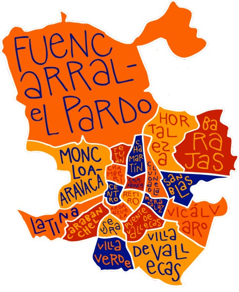

¡Descubre los distintos distritos de Madrid y todo lo que tienen que ofrecerte!
Elige una actividad, encuentra un sensei en tu distrito, conviértete en su pupilo,
compite con otros barrios y distritos, sube en el ranking y gana premios.
No nos mires 👀... únete
